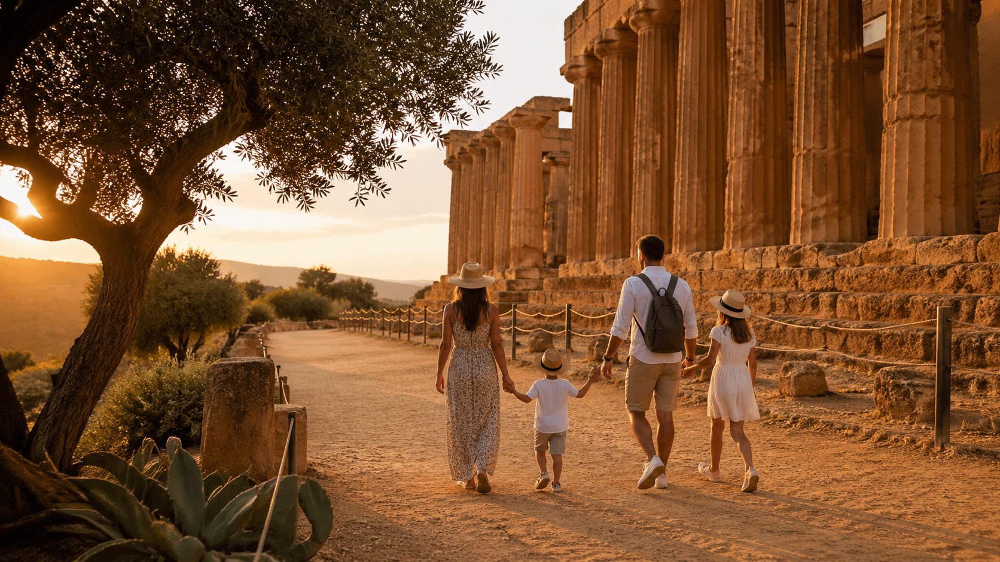

I templi greci più belli del mondo, vissuti con i bambini. Come renderla indimenticabile — anche per i più piccoli.
🗓️ Tutto l'anno
👨👩👧 0-3 · 4-9 · 10-12 anni
📍 Agrigento
🆓 Under 18 UE gratuito
Introduzione
Perché la Valle dei Templi non è una visita noiosa
La Valle dei Templi è uno di quei posti che sembrano fatti apposta per i bambini: colossi di pietra che sembrano giganti addormentati, ulivi secolari da abbracciare, capre con le corna a spirale, la statua di Icaro che vola. Il segreto è visitarla nel modo giusto — e questa guida ti dice esattamente come.

La chiave è il racconto. Ogni tempio è una storia greca da raccontare — Ercole, Icaro, Hera gelosa di Zeus. I bambini che conoscono i miti si trasformano in esploratori curiosi. I bambini under 18 UE entrano gratis — paghi solo i biglietti degli adulti.
Cosa trovi nell'esperienza completa
I templi da non perdere e come raccontarli ai bambini
Come arrivare da Palermo, Catania e dintorni
Orari, biglietti e come risparmiare con bambini
Mattina vs tramonto vs notturna — quale scegliere
Consigli pratici per 0-3, 4-9 e 10-12 anni
Itinerario ora per ora + cosa vedere nei dintorni
1.300
Ettari — il più grande sito al mondo
€0
Under 18 UE — ingresso gratuito
~2km
Via sacra — anche col passeggino
365
Giorni all'anno — aperto sempre
🏛️I templi da non perdere — e come raccontarli ai bambini
Il Tempio della Concordia è il più bello — tra i templi greci meglio conservati al mondo. Davanti c'è la statua di Icaro caduto: racconta ai bambini come volò troppo vicino al sole e le ali di cera si sciolsero. I bambini rimangono affascinati. Parti sempre dal Tempio di Hera (Giunone): il percorso è in discesa e i bambini camminano molto più volentieri. Lungo la via sacra trovi il recinto delle capre Girgentane...
🔒 Contenuto riservato ai lettori
🗺️Come arrivare, parcheggiare e comprare i biglietti
Da Palermo circa 2 ore in auto, da Catania altrettanto. Il consiglio che non trovi da nessuna parte: entra dall'ingresso Tempio di Hera — il percorso è tutto in leggera discesa e i bambini camminano molto più volentieri. Il parcheggio vicino costa circa €3. I bambini under 18 UE entrano gratis — porta il documento d'identità. La prima domenica del mese è gratis per tutti...
🔒 Contenuto riservato ai lettori
🌅Mattina, tramonto o visita notturna — quale scegliere
La mattina presto (8:30-11:00) è perfetta in primavera e autunno: bambini freschi, folla minima, luce laterale bellissima. Il tramonto (17:00-20:00) è la scelta migliore in estate: la luce dorata sul Tempio della Concordia è straordinaria, il tempio si tinge di arancio. La visita notturna (luglio-settembre, fino alle 23:00-24:00) è spettacolare con i templi illuminati sotto le stelle...
🔒 Contenuto riservato ai lettori
👨👩👧Consigli per età — 0-3, 4-9, 10-12 anni
Con bambini 0-3 anni il percorso è fattibile con passeggino sulla via sacra, ma non durare più di 1,5 ore. Il Giardino della Kolymbethra è perfetto: fresco, verde, con spazio per correre. Per i 4-9 anni questa è l'età migliore — le dimensioni dei templi li colpiscono moltissimo. Racconta le storie di Ercole e Icaro prima di partire e durante la visita. Le capre Girgentane lungo la via sacra...
🔒 Contenuto riservato ai lettori
🗓️Itinerario ora per ora + dintorni da non perdere
8:30 — Arrivo Tempio di Hera, parco vuoto e bambini freschi. 9:00 — Visita Tempio di Hera con vista panoramica, racconta la storia di Hera e Zeus. 9:45 — Via sacra verso il Tempio della Concordia, sosta obbligatoria al recinto delle capre Girgentane. 10:15 — Tempio della Concordia, il più bello — foto con Icaro e storia del mito. Nei dintorni: Scala dei Turchi a 20 minuti...
🔒 Contenuto riservato ai lettori
Pronti per un viaggio nell'antica Grecia?
Tutto quello che serve per vivere la Valle dei Templi con la tua famiglia — PDF scaricabile, aggiornato aprile 2026.
PDF scaricabile · Aggiornamenti inclusi · Consegna immediata